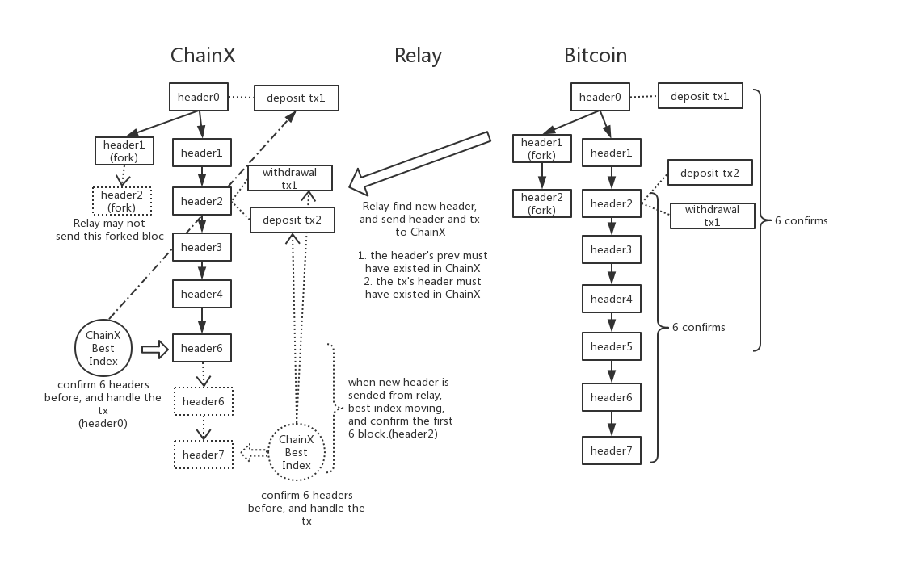
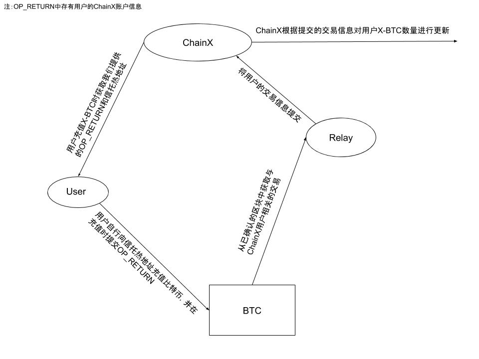
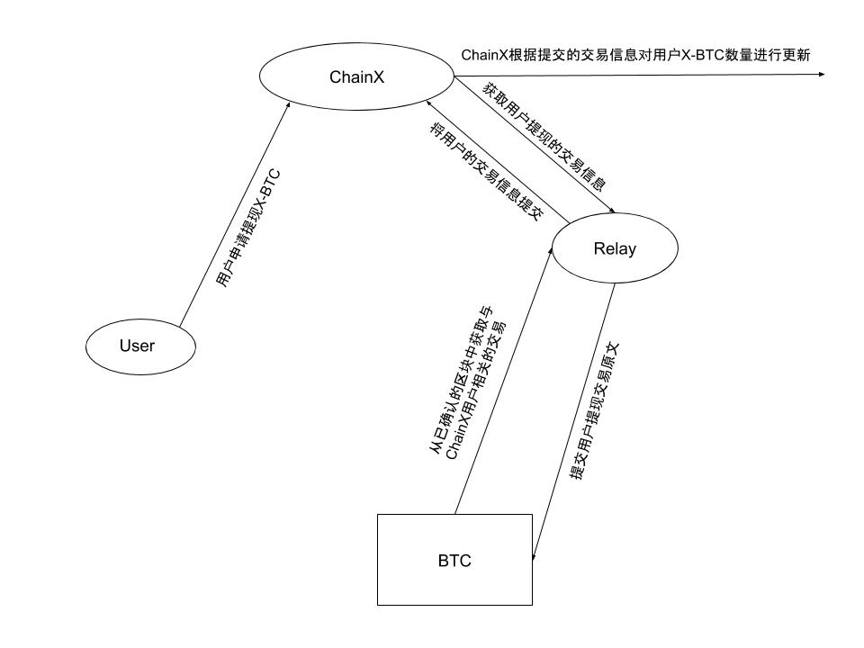

Bitcoin Transfer Bridge/Gateway
Bitcoin Transfer Bridge/Gateway
introduce
The Bitcoin transfer bridge/gateway is a module on ChainX that realizes the cross-chain of Bitcoin assets.
For the Bitcoin chain, ChainX adopts
- Bitcoin Light Node Verification (SPV) ensures the security of the Bitcoin deposit and withdrawal confirmation process
- Bitcoin multi-signature locks holding Bitcoin assets and the multi-signature private key holder controls Bitcoin withdrawal
To sum up, ChainX adopts the model of “one-way light node verification, multi-signature control of original chain assets” for the Bitcoin chain.
Term
Bitcoin light node verification: Using the Bitcoin light node verification logic, only the Bitcoin block header can be verified through Merkel proof that the transaction is real.
Bitcoin multi-signature: The multi-signature script mode is adopted on the Bitcoin chain to realize the multi-signature technology on Bitcoin.
Bitcoin Trust: A role that is registered on the ChainX chain and holds a Bitcoin multi-signature private key, and a trust candidate can become a Bitcoin Trust after a trust change.
Bitcoin Trust Candidate: You must first be a ChainX verifier, and then you can become a Bitcoin Trust candidate after registering a set of hot and cold public keys on the ChainX chain.
Bitcoin trust renewal: The next trust is designated from the previous trust, and after the trust multi-signature vote on the ChainX chain, the next trust is determined and the trust multi-signature address is generated.
Bitcoin multi-signature address: The hot and cold addresses are generated by the hot and cold public keys registered by the trusts according to the Bitcoin multi-signature script when the trust is replaced.
Trust multi-signature: The current trust has a multi-signature address on the ChainX chain, and the trust can make some decisions through the multi-signature address, such as trust relief, setting Bitcoin withdrawal fees, etc.
Bitcoin Relay: An off-chain program that submits Bitcoin block headers and transactions involving ChainX-related Bitcoins to the ChainX chain.
Bitcoin Light Node Verification
ChainX implements a complete Bitcoin light node verification logic module in the Runtime environment. The logic module starts from a certain Bitcoin block height (determined at genesis), accepts Bitcoin blocks with subsequent heights, and has the switch “heaviest”. “Proof of Work Chain” function. Therefore, if the latest block generated on the Bitcoin chain is normally submitted to ChainX by Bitcoin Relay, the Bitcoin transfer bridge will have a copy of the Bitcoin block header information and verifiable metadata of Bitcoin.
The light node verification logic in the Bitcoin Bridge will verify the Bitcoin block header:
- Parent hash existence
- Proof of Work
- time limit
Wait for the verification logic that SPV should have, and also have the same confirmation logic under the heaviest workload proof as the Bitcoin chain. Assuming that the number of confirmations is m, after accepting the nth block header, the n-m+1th block will be set. Blocks are marked for confirmation, see:

In the Bitcoin transfer bridge, only the Bitcoin block header data submitted externally is accepted, and the verification of whether the data is legal and the business logic of the light node are independently operated and decided in the Runtime of ChainX, and are not affected by external influences.
Therefore, the verification and confirmation block logic of the Bitcoin light node in ChainX is

In ChainX 1.0, Bitcoin transactions related to ChainX can be submitted to the transfer first, and then wait until the Bitcoin block header is confirmed to execute the transaction processing process, while ChainX 2.0 simplifies this process and only allows submissions in the ChainX chain Bitcoin transactions before the confirmed block header above, and Bitcoin transactions under the unconfirmed block header are not allowed to be submitted.
Multi-signature management and trust
In the ChainX chain, the role that holds the multi-signature private key is called “trustee”. The trust is mainly responsible for managing asset security and processing Bitcoin withdrawal applications.
The main process that the trust needs to process on the ChainX chain is to process withdrawals. The execution process is as follows:
- The trust periodically forms a bitcoin withdrawal transaction based on the withdrawal application on the ChainX chain and sends it to the bitcoin transfer bridge of the ChainX chain;
- The Bitcoin transfer bridge locks the corresponding withdrawal application according to the withdrawal request of the trust;
- The trust performs Bitcoin multi-signature signatures according to the original text of the Bitcoin transaction on the ChainX chain;
- When the last multi-signature signature is completed, the Bitcoin withdrawal transaction will be submitted to the Bitcoin network by Relay;
- After the Bitcoin network is packaged, Relay finds the Bitcoin withdrawal transaction submitted by the trust, and sends the withdrawal transaction to the Bitcoin transfer bridge of the ChainX chain;
- The Bitcoin transfer bridge verifies the validity of the withdrawal transaction through the light node scheme, and destroys the corresponding withdrawal application and X-BTC tokens on the ChainX chain.
On the other hand, the trust needs to periodically move the bitcoins in the hot and cold addresses according to the balance of the hot addresses that have been recharged to ChainX to ensure the security of the bitcoins locked in the multi-signature addresses. Bitcoin transactions that move hot and cold addresses can be submitted by Relay to the Bitcoin Bridge, but there will be no special handling. For more information on multi-signature and trusts, see trust
Bitcoin transfer bridge business logic
It can be seen from the above introduction that the Bitcoin transfer bridge adopts the mode of one-way relay plus trust multi-signature to maintain the Bitcoin cross-chain process of the Bitcoin transfer bridge. Therefore, the overall business logic of the Bitcoin transfer bridge is shown in the following figure:
As can be seen from the above figure:
-
Preconditions:
The ChainX chain first needs to have a trust to generate the corresponding hot and cold trust multi-signature address.
-
Bitcoin block header:
- The Bitcoin block header is submitted by relay (or submitted by Substrate offchain worker)
- The Bitcoin transfer bridge verifies the Bitcoin block header and forms the heaviest workload chain for the Bitcoin block.
- The transfer bridge will confirm that a previous block is a confirmation block according to the latest Bitcoin block header.
-
Recharge process: 
-
There are first blocks on the chain; 2. The user transfers money to the trust’s hot address, and carries the user’s ChainX address and other information in the OP_RETURN in the **transaction. Only by carrying the information can the bitcoin transfer bridge identify which recharge transfer transaction is associated with. ChainX user related; 3. Relay finds the transaction and submits the transaction to the transfer bridge; (In 1.0, the transaction can be submitted when it is found, and it will not be executed until it is confirmed. In 2.0, only the confirmed transaction can be submitted) 4. When the transaction is confirmed, execute the transaction. When the transaction is a recharge transaction, the ChainX address is parsed from OP_RETURN, and the corresponding X-BTC amount is issued to the ChainX account; 5. At this point, the Bitcoin recharge process is completed.
-
Withdrawal process:

- The user applies to withdraw X-BTC;
- The record module in the ChainX transfer bridge/gateway module will lock the corresponding X-BTC and record the user application information, which is associated with a unique ID;
- The trust periodically obtains the withdrawal in the current application, and according to the withdrawal information component, the original text of the bitcoin withdrawal transaction;
- After the original text of the withdrawal transaction is sent to the ChainX bitcoin transfer bridge, the corresponding withdrawal record will be locked, and then other trusts will perform bitcoin multi-signature signatures based on the original bitcoin text;
- After the signature is completed, the Bitcoin transaction will be submitted to the Bitcoin network;
- After packaging, relay will submit the withdrawal transaction to the transfer bridge, and after confirmation, it will release the corresponding withdrawal record and destroy the locked X-BTC;
- At this point, the Bitcoin withdrawal process is completed.
other
-
The user’s Bitcoin recharge transaction does not carry OP_RETURN, or the valid user ChainX information cannot be parsed in OP_RETURN.
For this kind of problem, ChainX’s Bitcoin transfer bridge develops a protocol:
The Bitcoin Transfer Bridge believes that a Bitcoin recharge transaction for ChainX will be related to the address contained in the first input of this Bitcoin transaction, and the holder of this address must have this recharge control of the transaction.
Therefore, if the valid ChainX user information cannot be obtained in the transaction, a relationship between the address of the first input of the transaction and the recharge transaction will be recorded in the Bitcoin transfer bridge of ChainX, and called this This kind of recharge transaction is “unclaimed recharge transaction”.
When another recharge transaction using the same address as the first input address occurs in the future, and the recharge transaction carries valid OP_RETURN information to obtain the corresponding ChainX account address, the unsecured address related to this address will be released. Claim the recharge transaction to this ChainX account address.
E.g:
Suppose there is a transaction tx1 as:
input1(address1) |---------| input2(address2) |---------| output1 (Trust address) value 100000Then the transaction will be recorded on the chain as:
BtcAddress => BtcDepositCache(tx_hash, 100000)When the bitcoin transfer bridge receives another recharge transaction in the future:
input1(address1) |--------| |--------| output1(Trust address) value 99999 |--------| output(OP_RETURN) => ChainX address: 5XxxxxxxxxAt this time,
100000 + 99999 = 199999of X-BTC will be issued to the ChainX address 5Xxxxxxxxx, and the unclaimed deposit transactions related to this address will be removed.